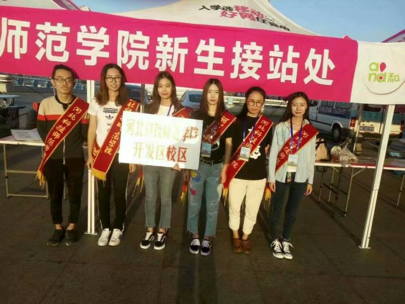
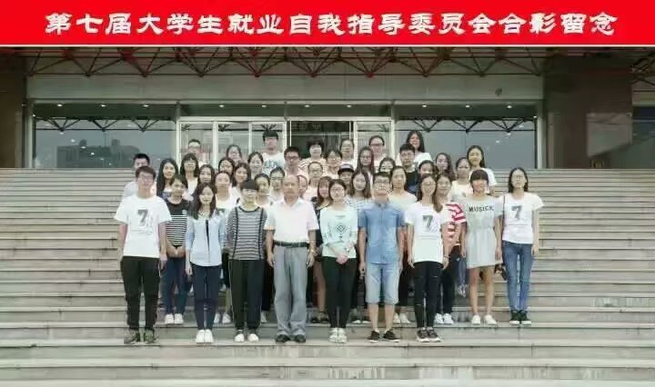
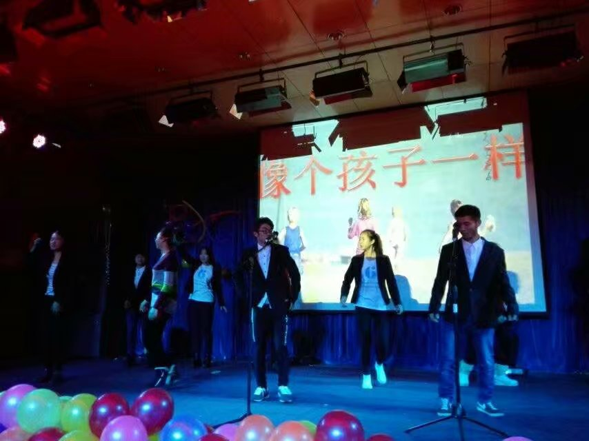
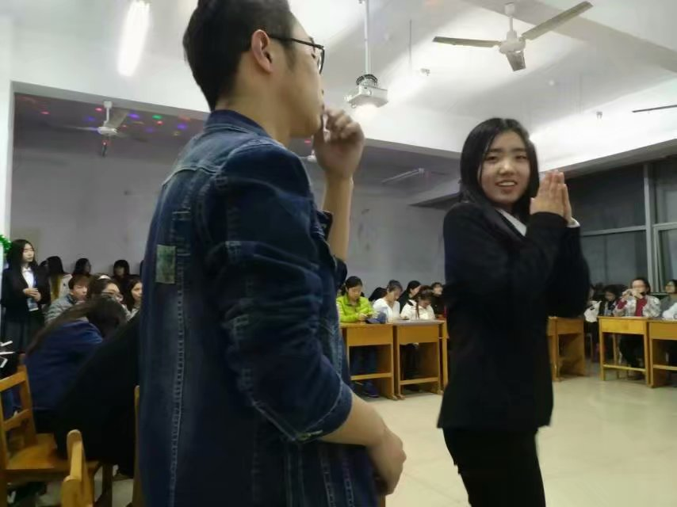
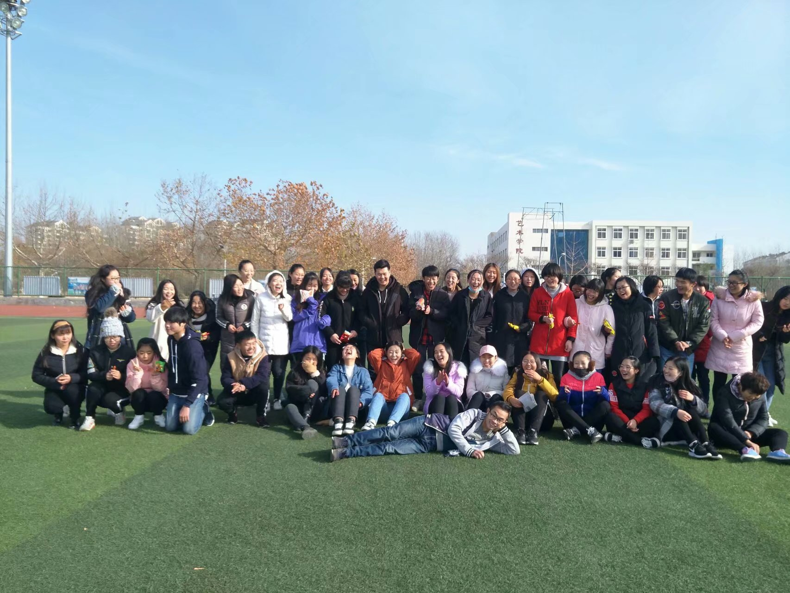

心情日记
@ 2017-12-20 16:54:07
二零一五年秋，走入校就业，感谢乐乐姐@连乐乐部长 晓荣姐@部长衡晓荣。 的赏识，大一一年，有佳伟学长@商佳伟 的带领，最感动张晨曦@张哈哈 尹晓雯@16教技尹晓雯 张澄澄@智障张澄澄 大二一年，感谢N多人让我留在校就业，感谢璐璐姐@秘书部 张璐璐 张瑜姐@张瑜 指引的方向，大三，更感谢更多的人让我留在就业，为就业继续付出，时至今日，我在校就业的最后一个大型活动已经圆满结束，从大一到现在，五个大活动，部长的带领，主席的指引，最后才是自己的努力，感谢人很多，在其职，做其事，你自己努力问心无愧最踏实了，2017.12.06最后一个大活动，傍晚哭的稀里哗啦，舍不掉的很多，爱的人也很多，看着一届一届的学弟学妹这么努力倍感自豪，校就业每个人都是最牛逼的的，服务部什么的最牛逼了还有很多没有@到的人，感谢一路来的支持与帮助，剩余的时间，我还会秉承“用心去做事，用行动去为大家服务”（一句话说了三年，但我做到了）的原则，为大家树立最后的榜样

永远的记忆

匆匆的脚步

温暖而忙碌

快乐的时光

想起心会暖